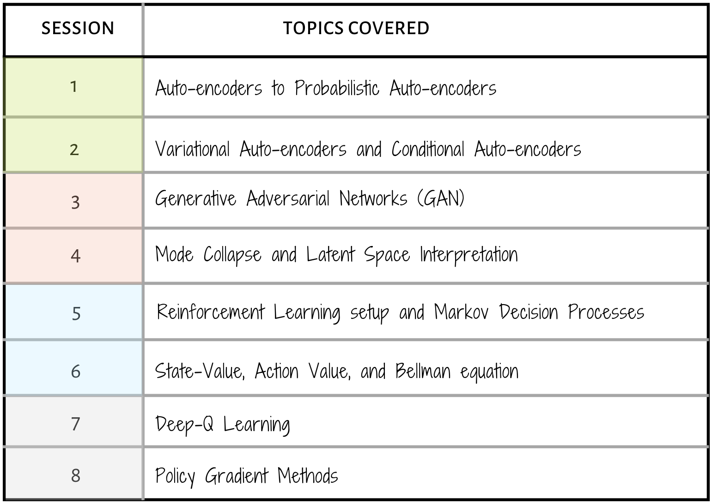

- Look for the bare necessities, The simple bare necessities, Forget about your worries and your strife*
Welcome to the First Edition of AI4. The objective of this module is to provide fundamental understanding of the concepts behind Generative Models and Reinforcement Learning and apply them to real world problems. This course follows the Univ.AI model of balancing between concept, theory, and implementation.
The course is split into 2 parts. It starts with generative models which covers autoencoders, variational autoencoders and Generative Adversarial Networks. The second half of this module, will introduce you to the field of Reinforcement Learning.
At the end of this module, you will be able to build efficient generative models, and work with reinforcement learning problems.
This page introduces you to the team, the basic instructions, the schedule and various elements of our class.
If you would like to apply to this course, please go here.
We also provide this course as part of our Masters and Accelerated program, check this link out to get more information and apply.
The teaching assistants for the duration of this course will be:

We have very carefully designed the coursework to give you, the student, a wholesome learning experience. The following will give a brief idea of the topics that will be covered in this course.

Your are expected to have a working knowledge of python, along with these three libraries:
All exercises in this course will be done in jupyter notebooks.
Note: Prior knowledge of high level machine learning libraries such as keras is necessary for this module
Before you begin the course, we have prepared for you a simple exercise to ensure your proficieny of the above libraries.
This will help you assess your preparedness for the course, and will also help you familiarize yourself with the platform.

We actively seek and welcome people of diverse identities, from across the spectrum of disciplines and methods since Artificial Intelligence (AI) increasingly mediates our social, cultural, economic, and political interactions [1].
We believe in creating and maintaining an inclusive learning environment where all members feel safe, respected, and capable of producing their best work.
We commit to an experience for all participants that is free from – Harassment, bullying, and discrimination which includes but is not limited to:
Reference:
[1] K. Stathoulopoulos and J. C. Mateos-Garcia, “Gender Diversity in AI Research,” SSRN Electronic Journal, 2019 [Online]. Available: http://dx.doi.org/10.2139/ssrn.3428240.
We assume you have a Univ.AI account, created when you signed up at course.univ.ai. If not, email programs@univ.ai.
All exercises and homeworks in this course will be done in jupyter notebooks. This link will help you setup jupyter lab and get you acquianted with jupyter notebooks.